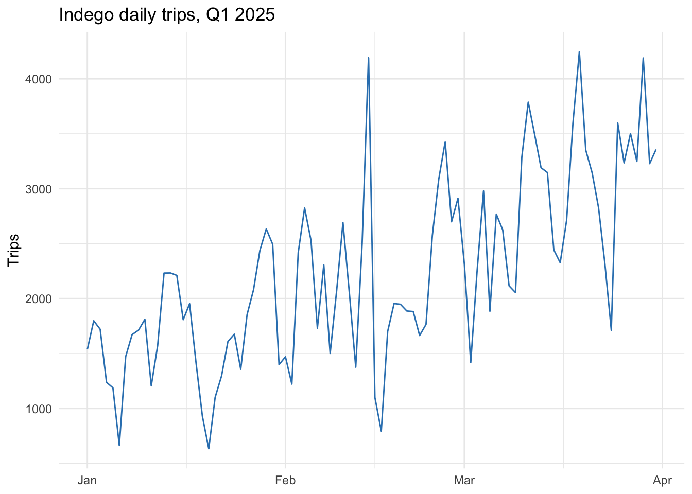
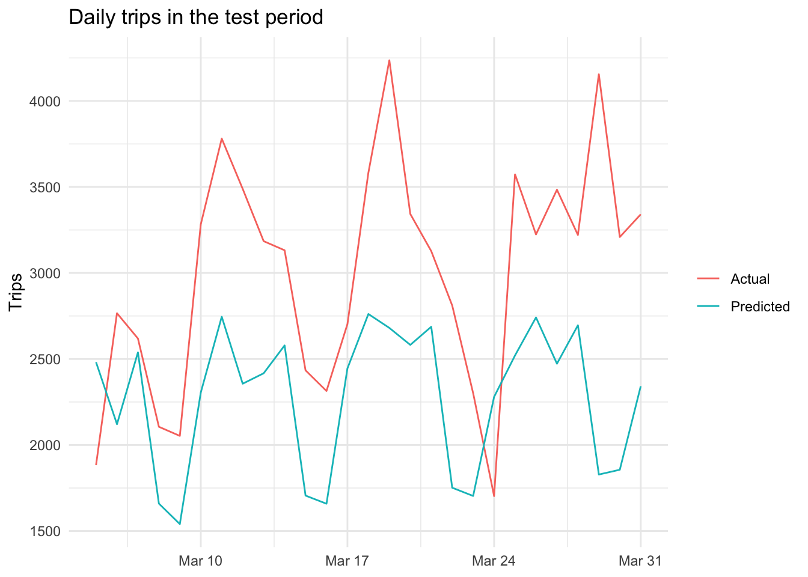
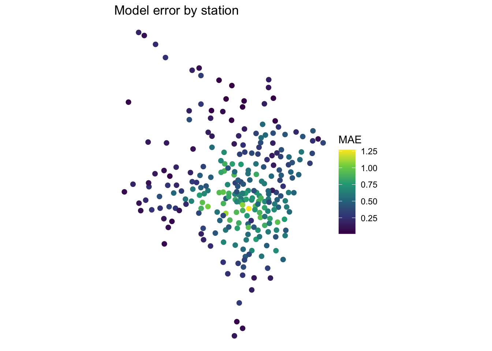

library(tidyverse)
library(lubridate)
library(sf)
library(riem) # weather from airport stations
options(scipen = 999)
mae <- function(actual, predicted) mean(abs(actual - predicted))
rmse <- function(actual, predicted) sqrt(mean((actual - predicted)^2))Week 12 Lab: Space-Time Prediction with Indego Bike Share
Ungraded in-class lab
The question
It’s 6:00 AM on a weekday in March, and you run Indego’s rebalancing trucks. You need to know which stations will have a lot of riders between 7 and 9 AM.
In this lab you’ll build that forecast. You’ll turn the trip records into a count of trips for every station and hour, add features that would be available at 6 AM, train on January and February, and test on March. You’ll compare your models to some simple forecasts that don’t use a model at all, and then look at where the errors fall.
Where you see ___, type the missing code yourself, and don’t run a chunk until every ___ in it is filled in. The checkpoints give the numbers your table should get. If yours are far off, fix things before moving on, because each step depends on the ones before it.
Setup
Download indego-trips-2025-q1.csv from Canvas and put it in a data/ folder next to this file.
indego_raw <- read_csv("data/indego-trips-2025-q1.csv")
glimpse(indego_raw)Rows: 201,588
Columns: 15
$ trip_id <dbl> 1123985990, 1123986350, 1124202498, 1123986241, 11…
$ duration <dbl> 5, 14, 894, 9, 13, 11, 15, 19, 20, 24, 26, 11, 12,…
$ start_time <chr> "1/1/2025 0:00", "1/1/2025 0:04", "1/1/2025 0:05",…
$ end_time <chr> "1/1/2025 0:05", "1/1/2025 0:18", "1/1/2025 14:59"…
$ start_station <dbl> 3371, 3344, 3021, 3253, 3182, 3346, 3049, 3112, 31…
$ start_lat <dbl> 39.95340, 39.95961, 39.95390, 39.93074, 39.95081, …
$ start_lon <dbl> -75.15430, -75.23354, -75.16902, -75.18924, -75.16…
$ end_station <dbl> 3378, 3294, 3073, 3253, 3249, 3000, 3100, 3035, 33…
$ end_lat <dbl> 39.95238, 39.95174, 39.96143, 39.93074, 39.95784, …
$ end_lon <dbl> -75.14728, -75.17063, -75.15242, -75.18924, -75.19…
$ bike_id <chr> "22580", "31417", "31393", "31434", "22872", "1187…
$ plan_duration <dbl> 30, 365, 1, 30, 1, 365, 30, 30, 365, 365, 30, 365,…
$ trip_route_category <chr> "One Way", "One Way", "One Way", "Round Trip", "On…
$ passholder_type <chr> "Indego30", "Indego365", "Walk-up", "Indego30", "W…
$ bike_type <chr> "electric", "electric", "electric", "electric", "e…Part 1: From trips to station-hours
1.1 Clean and bin
Station 3000 is Indego’s “virtual station,” which isn’t a real dock. A few trips have no coordinates. Drop both. Then put every trip into the hour it started in.
indego <- indego_raw %>%
filter(start_station != 3000, !is.na(start_lat)) %>%
mutate(
start_datetime = mdy_hm(start_time),
interval60 = floor_date(start_datetime, unit = "hour") # fill in the unit
)
nrow(indego)[1] 201582n_distinct(indego$start_station)[1] 264Checkpoint 1: 201,582 trips and 264 stations.
1.2 A quick look over time
daily <- indego %>%
mutate(date = as_date(interval60)) %>%
count(date, name = "trips")
ggplot(daily, aes(x = date, y = trips)) +
geom_line(color = "#3182bd") +
labs(title = "Indego daily trips, Q1 2025", x = NULL, y = "Trips") +
theme_minimal()
Question: Name the two things you see in this plot that a model trained on January and February will have trouble with in March.
Your answer: Ridership rises steadily through the quarter,average daily trips go from about 1,644 in January to 2,153 in February to 2,915 in March, so a model trained on January and February will under-predict March. The plot also shows isolated spikes, like February 14 (the Eagles parade, 4,192 trips versus about 2,319 on a typical Friday), which ordinary model can not anticipate.
The spike is February 14, 2025, the day of the Eagles parade. Compare it to the other Fridays:
daily %>%
mutate(friday = wday(date, label = TRUE) == "Fri") %>%
filter(friday) %>%
mutate(parade = date == as_date("2025-02-14")) %>%
group_by(parade) %>%
summarize(avg_trips = mean(trips))# A tibble: 2 × 2
parade avg_trips
<lgl> <dbl>
1 FALSE 2319.
2 TRUE 4192 1.3 Build the complete panel
The trip file only has rows for station-hours where something happened. We need a row for every station in every hour, with a zero where nobody rode.
all_hours <- seq(ymd_hm("2025-01-01 00:00"), ymd_hm("2025-03-31 23:00"), by = "hour")
study_panel <- indego %>%
count(start_station, interval60, name = "Trip_Count") %>%
complete(
start_station,
interval60 = all_hours,
fill = list(Trip_Count = 0) # what goes in an hour with no trips?
)
nrow(study_panel)[1] 570240mean(study_panel$Trip_Count == 0)[1] 0.7851729indego %>% count(start_station, interval60) %>% nrow()[1] 122503Checkpoint 2: 570,240 rows (264 × 2,160), and about 0.785 of them are zero.
Question: Before complete(), how many rows did the counted data have? Write one line of code to find out, then explain in one sentence why a lag computed on that data would be wrong.
Your answer: 122,503 rows. Because hours with zero trips don’t exist as rows, so lag() would pick up the previous hour with trips at that station.
Part 2: Time, lag, and location features
2.1 Time features
wday(label = TRUE) returns an ordered factor. In a regression, R would then fit polynomial contrasts (dotw.L, dotw.Q, …), which we don’t want. We convert it to a plain factor and make Monday the reference day.
study_panel <- study_panel %>%
mutate(
hour = hour(interval60),
dotw = relevel(factor(wday(interval60, label = TRUE), ordered = FALSE), ref = "Mon"),
week = week(interval60),
date = as_date(interval60),
weekend = as.integer(dotw %in% c("Sat", "Sun"))
)2.2 Temporal lags
A lag is the same station’s trip count k hours earlier. To compute lags, the data have to be sorted by time within each station.
study_panel <- study_panel %>%
arrange(start_station, interval60) %>%
group_by(start_station) %>% # lags are computed within what?
mutate(
lag1 = lag(Trip_Count, 1),
lag3 = lag(Trip_Count, 3),
lag24 = lag(Trip_Count, 24), # same hour yesterday
lag168 = lag(Trip_Count, 168) # same hour last week
) %>%
ungroup()Question: At 6:00 AM you are predicting trips in the 8:00 AM hour. Which of lag1, lag3, lag24, and lag168 would you actually have at that point? Explain in one sentence.
Your answer: lag3, lag24, and lag168, which stand for the 5 AM hour, 8 AM yesterday and 8 AM last week.
2.3 A spatial feature: distance to City Hall
stations <- indego %>%
group_by(start_station) %>%
summarize(lat = first(start_lat), lon = first(start_lon)) %>%
st_as_sf(coords = c("lon", "lat"), crs = 4326) %>%
st_transform(2272) # PA South, feet
city_hall <- st_sfc(st_point(c(-75.1635, 39.9526)), crs = 4326) %>%
st_transform(2272)
stations <- stations %>%
mutate(dist_cityhall = as.numeric(st_distance(., city_hall)) / 5280) # miles
study_panel <- study_panel %>%
left_join(st_drop_geometry(stations), by = "start_station")Part 3: Splitting the data by time
We train on the earlier weeks and test on the later ones, because that’s the situation Indego is in: it has past data and needs to predict what comes next.
3.1 Which stations can we model?
Some stations only have trips in one of the two periods. A model can’t learn anything about a station that isn’t in the training data.
early <- study_panel %>% filter(week < 10, Trip_Count > 0) %>% distinct(start_station) %>% pull()
late <- study_panel %>% filter(week >= 10, Trip_Count > 0) %>% distinct(start_station) %>% pull()
length(intersect(early, late))[1] 257setdiff(late, early) # stations with trips ONLY in the test period[1] 3372 3399 3407 3408 3409 3410 3411Checkpoint 3: 257 stations appear in both periods, and 7 stations only show up in March.
3.2 Split
The first week has no lag168, so we drop it.
model_panel <- study_panel %>%
filter(start_station %in% intersect(early, late), !is.na(lag168))
train <- model_panel %>% filter(week < 10) # earlier weeks
test <- model_panel %>% filter(week >= 10) # later weeks
nrow(train); range(train$date)[1] 345408[1] "2025-01-08" "2025-03-04"nrow(test); range(test$date)[1] 166536[1] "2025-03-05" "2025-03-31"Checkpoint 4: Train has 345,408 rows (Jan 8 – Mar 4). Test has 166,536 rows (Mar 5 – Mar 31).
Part 4: Simple forecasts to compare against
Before building a model, we check how well three simple forecasts do. The first predicts zero trips everywhere. The second uses the count from the same hour a week earlier. The third, which we’ll call the lookup table, uses the training-period average for each station, day of the week, and hour. A model is only useful if it does better than these.
lookup <- train %>%
group_by(start_station, dotw, hour) %>%
summarize(pred_lookup = mean(Trip_Count), .groups = "drop")
test <- test %>%
left_join(lookup, by = c("start_station", "dotw", "hour")) %>%
mutate(
pred_zero = 0,
pred_lastweek = lag168, # use last week's count as the prediction
pred_lookup = replace_na(pred_lookup, 0)
)The function below calculates MAE and RMSE for every column whose name starts with pred_. Type it yourself rather than copying it, since you’ll want the same approach for the final challenge.
scoreboard <- function(df) {
df %>%
pivot_longer(starts_with("pred_"), names_to = "model", values_to = "pred") %>%
group_by(model) %>%
summarize(
MAE = mae(Trip_Count, pred),
RMSE = rmse(Trip_Count, pred)
) %>%
arrange(RMSE)
}
scoreboard(test)# A tibble: 3 × 3
model MAE RMSE
<chr> <dbl> <dbl>
1 pred_lookup 0.434 0.860
2 pred_lastweek 0.509 1.05
3 pred_zero 0.487 1.16 mean(test$Trip_Count == 0)[1] 0.7252666Checkpoint 5:
model MAE RMSE pred_lookup 0.434 0.860 pred_lastweek 0.509 1.047 pred_zero 0.487 1.160
Question: “Predict zero everywhere” has a better MAE than “use last week.” Why? What fraction of test rows are zero? (Write the code.)
Your answer: Because 72.5% of test rows are zero. Predicting zero is exactly right on most rows.
Part 5: Models
5.1 Why not OLS?
m_ols <- lm(Trip_Count ~ factor(hour) + dotw, data = train)
mean(predict(m_ols, newdata = test) < 0)[1] 0.05555556Checkpoint 6: About 0.056 of the predictions are negative.
5.2 Poisson with time only
m_time <- glm(Trip_Count ~ factor(hour) + dotw, family = poisson, data = train)
exp(coef(m_time)[c("factor(hour)8", "factor(hour)17", "dotwSat")]) factor(hour)8 factor(hour)17 dotwSat
6.6215385 8.7900000 0.7251793 Question: Interpret the 5 PM number in one sentence. What’s the reference hour, and what’s the reference day?
Your answer: Holding nothing else fixed, a station-hour at 5 PM has about 8.8 times the expected trips of the same station at midnight — the reference hour is 12 AM (hour 0) and the reference day is Monday.
5.3 Adding lagged counts
The first model below uses the lagged counts as they are. The second uses log1p(), which is log(count + 1). Compare the two when you score them in 5.5.
m_rawlag <- glm(Trip_Count ~ factor(hour) + dotw + lag3 + lag24 + lag168,
family = poisson, data = train)
m_loglag <- glm(Trip_Count ~ factor(hour) + dotw +
log1p(lag3) + log1p(lag24) + log1p(lag168),
family = poisson, data = train)5.4 Distance to City Hall versus station fixed effects
m_dist <- glm(Trip_Count ~ factor(hour) + dotw +
log1p(lag3) + log1p(lag24) + log1p(lag168) + dist_cityhall,
family = poisson, data = train)
# Station fixed effects. This takes 1-2 minutes and a few GB of memory, so let it run.
# If your laptop chokes, the same model fits in seconds with the fixest package:
# m_fe <- fixest::fepois(Trip_Count ~ factor(hour) + dotw + log1p(lag3) +
# log1p(lag24) + log1p(lag168) | start_station, data = train)
m_fe <- glm(Trip_Count ~ factor(hour) + dotw +
log1p(lag3) + log1p(lag24) + log1p(lag168) + factor(start_station),
family = poisson, data = train)
# The 1-hour-ahead version, which uses lag1 (not allowed for the 6 AM question)
m_fe_lag1 <- glm(Trip_Count ~ factor(hour) + dotw +
log1p(lag1) + log1p(lag3) + log1p(lag24) + factor(start_station),
family = poisson, data = train)5.5 Score them
test <- test %>%
mutate(
pred_time = predict(m_time, newdata = test, type = "response"),
pred_rawlag = predict(m_rawlag, newdata = test, type = "response"),
pred_loglag = predict(m_loglag, newdata = test, type = "response"),
pred_dist = predict(m_dist, newdata = test, type = "response"),
pred_fe = predict(m_fe, newdata = test, type = "response"), # counts, not log counts
pred_fe_lag1 = predict(m_fe_lag1, newdata = test, type = "response")
)
scoreboard(test)# A tibble: 9 × 3
model MAE RMSE
<chr> <dbl> <dbl>
1 pred_fe 0.455 0.853
2 pred_lookup 0.434 0.860
3 pred_fe_lag1 0.458 0.860
4 pred_dist 0.483 0.882
5 pred_loglag 0.504 0.907
6 pred_time 0.565 1.02
7 pred_lastweek 0.509 1.05
8 pred_zero 0.487 1.16
9 pred_rawlag 0.540 1.80 Checkpoint 7 (the three baselines are still in the table too; your numbers should be within about ±0.005):
model MAE RMSE pred_fe 0.455 0.853 pred_lookup 0.434 0.860 pred_fe_lag1 0.458 0.860 pred_dist 0.484 0.882 pred_loglag 0.504 0.907 pred_time 0.565 1.018 pred_rawlag 0.540 1.804
Questions (answer as a table):
Why was RMSE worse with the raw lagged counts than with no lags at all? Think about what the Poisson model does with a predictor on the log scale.
pred_fe_lag1uses information you wouldn’t have at 6 AM. How much did it improve the forecast?The lookup table has the lowest MAE, and
pred_fehas the lowest RMSE. Indego cares most about large misses at busy stations during rush hour. Which measure should Indego use to choose, and why?The fixed effects model did better than the distance model. Seven stations opened in March. Which of the two models could make predictions for those stations, and why?
| Your answers: | Question |
|---|---|
| a. Why was RMSE worse with raw lags than no lags? | The Poisson model has a log link, so a raw count used as a predictor works exponentially: each extra trip in the lag multiplies expected trips by exp(coefficient). At busy station-hours the predictions explode, and RMSE squares those large misses (1.804 vs 1.018). log1p() makes the relationship concave and fixes it (0.907). |
| b. How much did pred_fe_lag1 improve? | Essentially none — it was slightly worse on both measures (MAE 0.458 vs 0.455, RMSE 0.860 vs 0.853). Once lag3, lag24 and lag168 are in, the 7 AM count adds almost no new information. |
| c. Which measure should Indego use? | RMSE. It squares errors, so large misses at busy rush-hour stations dominate, while MAE is dominated by the 72.5% of test rows that are zero-hours. RMSE points to pred_fe. |
| d. Which model can predict for the 7 new stations? | m_dist. It only needs coordinates to compute distance to City Hall, so a new station gets a prediction immediately. m_fe estimates one coefficient per station and never estimated one for a station absent from training. |
Part 6: Adding weather
First, check how often the model predicts fewer trips than actually happened over a whole day:
daily_check <- test %>%
group_by(date) %>%
summarize(actual = sum(Trip_Count), predicted = sum(pred_fe))
mean(daily_check$actual > daily_check$predicted)[1] 0.9259259ggplot(daily_check, aes(x = date)) +
geom_line(aes(y = actual, color = "Actual")) +
geom_line(aes(y = predicted, color = "Predicted")) +
labs(title = "Daily trips in the test period", x = NULL, y = "Trips", color = NULL) +
theme_minimal()
Checkpoint 8: The model under-predicts on about 0.93 of test days (25 of 27).
Ridership rose through March, and a warmer month is one likely reason. Next, pull hourly weather from Philadelphia International Airport. The code handles two problems with this data:
riemtimestamps are in UTC, while the Indego times are local clock time. The code converts them to Eastern time so they line up with the trips.- The airport sometimes reports more than once an hour. The code reduces the weather data to one row per hour before the join. Otherwise the join would duplicate rows in the panel.
weather_raw <- riem_measures(station = "PHL",
date_start = "2025-01-01",
date_end = "2025-04-01")
weather <- weather_raw %>%
mutate(
local = with_tz(valid, "America/New_York"),
interval60 = floor_date(force_tz(local, "UTC"), "hour")
) %>%
group_by(interval60) %>%
summarize(
temp = first(na.omit(tmpf)),
rain = as.integer(any(p01i > 0, na.rm = TRUE)),
.groups = "drop"
) %>%
complete(interval60 = all_hours) %>%
arrange(interval60) %>%
fill(temp, rain, .direction = "downup") %>%
filter(interval60 %in% all_hours)
nrow(weather) # should be 2,160, one row per hour[1] 2160train <- train %>% left_join(weather, by = "interval60")
test <- test %>% left_join(weather, by = "interval60")
nrow(test) # still 166,536? If not, the join duplicated rows.[1] 166536m_weather <- glm(Trip_Count ~ factor(hour) + dotw +
log1p(lag3) + log1p(lag24) + log1p(lag168) +
factor(start_station) + temp + rain, # add the two weather variables
family = poisson, data = train)
test <- test %>%
mutate(pred_weather = predict(m_weather, newdata = test, type = "response"))
scoreboard(test)# A tibble: 10 × 3
model MAE RMSE
<chr> <dbl> <dbl>
1 pred_fe 0.455 0.853
2 pred_lookup 0.434 0.860
3 pred_fe_lag1 0.458 0.860
4 pred_weather 0.487 0.861
5 pred_dist 0.483 0.882
6 pred_loglag 0.504 0.907
7 pred_time 0.565 1.02
8 pred_lastweek 0.509 1.05
9 pred_zero 0.487 1.16
10 pred_rawlag 0.540 1.80 Questions:
Did weather beat the lookup table on RMSE? On MAE? Re-run the daily check with
pred_weather. Does it still under-predict most days?We used the actual temperature at 8 AM. At 6 AM, Indego wouldn’t know that yet. What would it have instead, and how much of a problem is that here?
| Your answers: | What happens at the empty station |
|---|---|
| The station keeps recording zero trips, so the model keeps its forecast low, trucks are never sent, the station stays empty, and the zeros keep coming — the model’s mistake reinforces itself over the next few months. | Demand-side data: failed unlock attempts at empty stations, app searches and route requests that never became trips, and dock-empty events. These measure demand rather than completed trips. |
Part 7: Looking at the errors
7.1 By time of day
test %>%
mutate(
error = Trip_Count - pred_fe,
time_of_day = case_when(
hour < 7 ~ "1 Overnight",
hour < 10 ~ "2 AM Rush",
hour < 15 ~ "3 Mid-Day",
hour < 19 ~ "4 PM Rush",
TRUE ~ "5 Evening"
)
) %>%
group_by(time_of_day, weekend) %>%
summarize(MAE = mean(abs(error)), mean_error = mean(error), .groups = "drop")# A tibble: 10 × 4
time_of_day weekend MAE mean_error
<chr> <int> <dbl> <dbl>
1 1 Overnight 0 0.141 0.0154
2 1 Overnight 1 0.149 0.0475
3 2 AM Rush 0 0.613 0.155
4 2 AM Rush 1 0.423 -0.0349
5 3 Mid-Day 0 0.543 0.0739
6 3 Mid-Day 1 0.670 0.363
7 4 PM Rush 0 0.828 0.238
8 4 PM Rush 1 0.732 0.251
9 5 Evening 0 0.444 0.109
10 5 Evening 1 0.398 0.137 Question: Is mean_error mostly positive or mostly negative? What does that mean for riders at busy stations during rush hour?
Your answer: Mostly positive. Riders at busy rush-hour stations will find more demand than the model expects.
7.2 By station
skill compares the model’s error at each station to the lookup table’s error there. A value above zero means the model did better than the lookup table at that station.
station_errors <- test %>%
group_by(start_station) %>%
summarize(
MAE_model = mae(Trip_Count, pred_fe),
MAE_lookup = mae(Trip_Count, pred_lookup),
avg_trips = mean(Trip_Count),
.groups = "drop"
) %>%
mutate(skill = 1 - MAE_model / MAE_lookup) # > 0 means the model beat the lookup table here
cor(station_errors$MAE_model, station_errors$avg_trips)[1] 0.9683853sum(station_errors$skill > 0)[1] 25Checkpoint 9: The correlation is about 0.97. About 25 of 257 stations have skill > 0.
station_map <- stations %>%
inner_join(station_errors, by = "start_station")
ggplot(station_map) +
geom_sf(aes(color = MAE_model), size = 2) +
scale_color_viridis_c(name = "MAE") +
labs(title = "Model error by station") +
theme_void()
# YOUR TURN: make the same map colored by avg_trips, then by skill.
# Use scale_color_gradient2(midpoint = 0) for skill so zero is the neutral color.Question: Compare the MAE map to the avg_trips map. What does the MAE map mostly reflect? Which of the three maps would you use to judge whether some neighborhoods are served worse by the model?
Your answer: The MAE map mostly reflects busyness, its correlation with average trips is 0.97. Use the skill map to judge, which compares each station to the lookup-table baseline and so controls for volume.
Part 8: Trips versus demand
Answer as a table, in 3–4 sentences:
When a station is empty, it records zero trips, even in hours when people wanted a bike. The model then learns that few people ride there. If Indego uses our forecast to decide where trucks go, what is likely to happen at that station over the next few months? What additional data would you ask Indego for to avoid this?
Your answer: An empty station records zero trips even when people wanted a bike, so the model learns that few people ride there and keeps its forecast low. If Indego sends trucks according to that forecast, the station is never restocked, stays empty, and keeps recording zeros — the model’s mistaken belief reinforces itself. I would ask Indego for demand-side data: failed unlock attempts at empty stations, app searches and route requests that never became trips, and dock-empty events, which measure demand rather than completed trips.
Optional challenge (no points)
Join census tract median household income to stations with get_acs(..., geometry = TRUE) and st_join(). Some stations won’t land in a residential tract. Map them and decide what to do with them. Then plot skill against income. Does the model do relatively worse in lower-income tracts? Keep your Census key in .Renviron and read it with Sys.getenv("CENSUS_API_KEY").